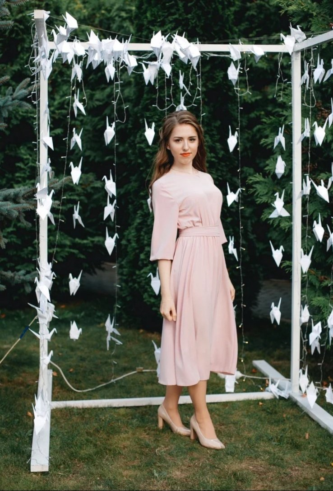

Если говорить про школьную жизнь, то она была насыщенной и интересной. Тогда и до сих пор ей нравилось учиться чему-то новому, неравнодушна к любым знаниям.
Екатерина Каменко

Поэтому ей всегда нравилось ездить в г. Солигорск на олимпиады по русскому языку, участвовать в командных играх по Что? Где? Когда? и прочих турнирах.

Ей всегда нравилось творчество и искусство, поэтому с самого раннего детства она хотела учиться в музыкальной школе. И в 2018 году закончила Несвижскую детскую школу искусств по фортепианному отделению. Там ей тоже приносило удовольствие участие в конкурсах, как сольно, так и в ансамбле цимбалистов. И этот период повлиял на её мировоззрение в дальнейшем. Сейчас она любит любое проявление искусства либо культуры в жизни.
Поэтому с уверенностью Катя может сказать, что она очень любит свой родной город. Так как там каждый кирпичик пронизан историей. Это Замок Радзивиллов с дворцово-парковым ансамблем, Слуцкие ворота, Фарный костел (16 век), на органе которого она играла, и др.


Живя в Минске, восполняет культурный пробел выступлениями на бесплатных концертах, занятиях в музыкальных классах на Немиге.
Академия дает ей бесценный опыт во всех сферах жизни разом. Вместе учимся, преодолеваем трудности, развиваемся, расширяем кругозор, практикуем навыки и становимся лучше. Так как смысл есть в самосовершенствовании (и в соблюдении моральных норм). В любых ситуациях человек должен оставаться человеком. Без морали в голове человек – не человек.